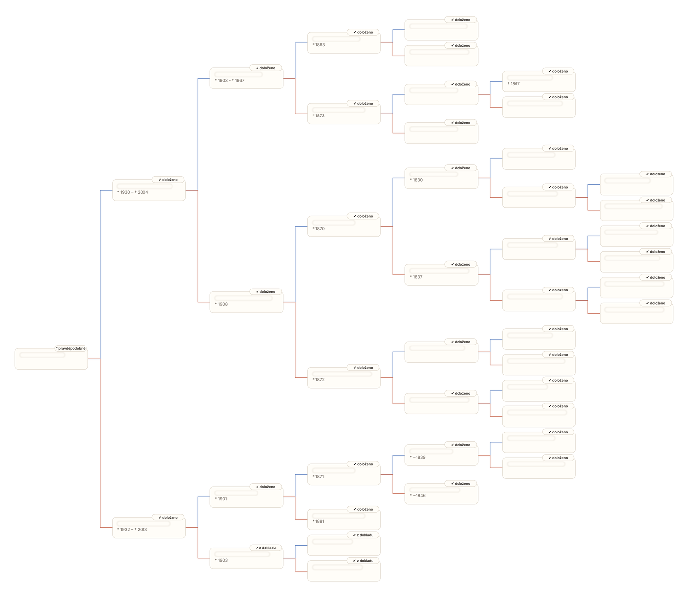

Pošlete, co o rodině víte, a my prohledáme digitalizované matriky archivů v Česku a na Slovensku. Dostanete strom, přehled osob a odkaz na každý archivní zápis.
Když nic nedohledáme, neplatíte vůbec nic.
Vyplníte formulář: jména, přibližné roky a místa narození rodičů a prarodičů, případně vyfotíte rodný nebo oddací list.
Generaci po generaci procházíme matriky narozených, oddaných a zemřelých. U každé osoby zapíšeme archiv, knihu a snímek.
E-mailem dostanete strom se zamlženými jmény, počet doložených předků a cenu. Teprve teď se rozhodujete.
Po platbě (QR kód) vám přijde PDF k tisku, interaktivní verze pro prohlížeč a soubor GEDCOM, spolu s fakturou.
Cena je konečná včetně DPH. Platba převodem nebo QR kódem, nabídka platí 14 dní.
Archivy zveřejňují jen starší matriky, proto spojku k nim musí dodat rodina. Stačí nám jeden předek narozený před rokem 1926, u kterého znáte obec a aspoň přibližný rok narození. Čím víc víte, tím hlouběji se dostaneme.
Rodný nebo oddací list prarodičů (fotka z mobilu stačí). Obsahuje jména a místa narození jejich rodičů, tedy rovnou další generaci.
Jméno, rok a obec narození dědečka či babičky, případně kde se brali. Doplňte, co se v rodině vypráví.
Na dokladech zakryjte rodná čísla (stačí prstem nebo papírkem). Nepotřebujeme je a nechceme je ukládat.
Po odeslání dostanete potvrzení s číslem zakázky. Náhled obvykle posíláme do několika dnů.
Záleží na tom, odkud rod pochází a jak se dochovaly matriky. Běžně se dostaneme do 18. století, výjimečně až k roku 1650. Z náhledu přesně uvidíte, kam až to šlo.
Napíšeme vám, kde jsme hledali a proč výzkum skončil, a nic neplatíte. Můžete se vrátit s dalšími údaji.
U každé osoby je odkaz na sken zápisu v archivu, takže si vše můžete ověřit sami. Nejisté vazby jsou označené a neplatíte za ně.
Zatím ne. Pokud předkové přišli odjinud, dohledáme je po hranici a napíšeme, kde pokračovat.
Službu provozuje 1. e-shop s.r.o., Úvaly. Výzkum provádí automatizovaný systém s umělou inteligencí, který čte archivní skeny; každý zápis je dohledatelný ve veřejném archivu.
Podklady a pracovní data mažeme 30 dní po uzavření zakázky. Podrobnosti v zásadách ochrany osobních údajů.